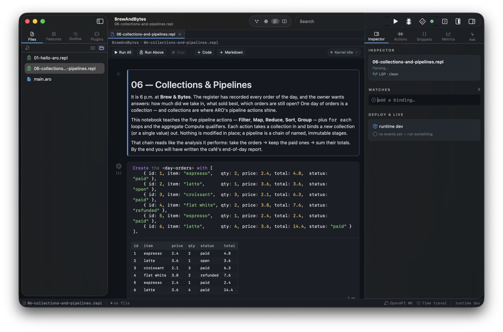
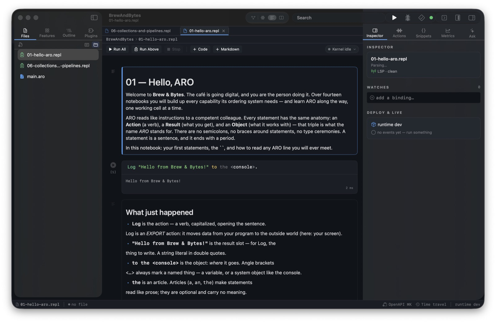

Jupyter Notebooks
Run ARO in notebooks: markdown prose between live code cells, executed against a
real REPL session. Open .repl files in Solaro's notebook editor, or
use the native Jupyter kernel in JupyterLab, VS Code, and DataSpell.
One protocol, every front-end
Everything notebook-shaped is built on aro repl --json — a
line-delimited JSON protocol over stdio
(ARO-0091).
Solaro's notebook editor, the native aro kernel, and the Python shim
all drive the same session semantics, so a cell behaves identically everywhere.
Notebooks in Solaro
A .repl file opens in Solaro as a notebook: rendered markdown cells,
syntax-highlighted ARO code cells, a run gutter with execution counts, and outputs —
including native tables for tabular values — captured beneath each cell.
Run All, Run Above, and the kernel chip (session variables,
restart, clear outputs) live in the notebook toolbar; ⇧⏎ runs a cell and selects
the next one.

The Collections & Pipelines notebook from the Learning course: a day of café orders becomes a native table straight from the cell's display bundle.
Cell semantics
A cell may mix meta-commands, feature-set definitions, and statements; it is split
into units in source order. Definitions accumulate across cells — cell 5 can call the
user-defined action cell 2 defined — and a cell's last value-producing statement is
displayed automatically, no explicit Return needed. Event handlers
defined in a session are live: an Emit in a later cell dispatches to
them, with handler output landing under the cell that emitted.
(* cell 1 — define a handler; it is live from this moment *)
(Notify: OrderPlaced Handler) {
Extract the <id> from the <event: id>.
Log <id> to the <console>.
Return an <OK: status> for the <notification>.
}
(* cell 2 — the handler's output appears under THIS cell *)
Emit an <OrderPlaced: event> with { id: 4711 }.The native kernel: JupyterLab, VS Code, DataSpell
aro kernel speaks Jupyter's wire protocol over ZeroMQ directly — no
Python required. Register it once and pick ARO in any Jupyter
front-end:
# Register the kernelspec (once)
aro kernel install
# Then: JupyterLab / VS Code / DataSpell → New Notebook → ARO
The kernel serves completion and inspection (LSP-backed), an
ipywidgets subset — sliders and text fields bound to session variables
via :widget slider <volume> 0 11 — and the Jupyter debug
protocol's variable inspector and expression evaluation. Interrupt is honest:
a cell blocked inside the runtime cannot be unwound, so interrupt restarts the
kernel process and says so.
The Learning course
The repository ships a 26-notebook ARO course under
Learning/ —
one story arc from the first Log statement to concurrency, streaming,
data engineering, and deployment. Every code cell of every notebook is executed
against a real REPL session in CI, so the course cannot silently rot.

Notebook 01 — Hello, ARO: the first statement, its output, and the anatomy of every ARO sentence you will ever read.
The protocol, if you're building a front-end
One JSON object per line, both directions. Every request gets exactly one
result; any number of stream messages precede it, and
that ordering is guaranteed — a client never guesses when a cell's output is done.
| Request | Answer |
|---|---|
execute | ok with an optional display bundle, or a structured error |
is_complete | complete / incomplete / invalid |
complete | matches + rich items, LSP-backed |
inspect | live variable values, hover docs |
info / reset / shutdown | session management |
Learn More
The full specification is ARO-0091: Jupyter Kernel & Machine-Readable REPL; the terminal REPL it grew from is Interactive REPL.